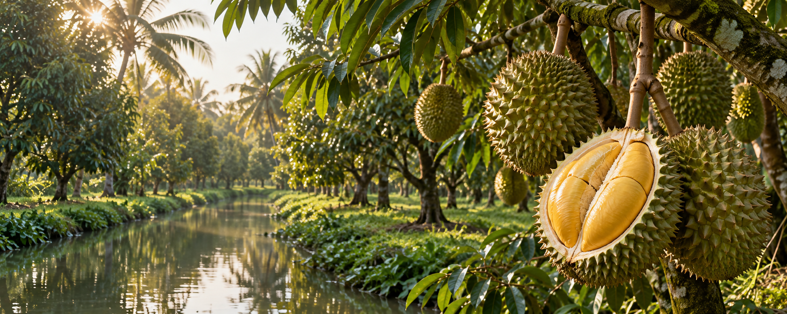

Từng trái sầu riêng đặc sản được vun trồng tự nhiên, tuyển chọn đúng độ chín và đóng gói tỉ mỉ theo tiêu chuẩn bền vững tại miền Tây trù phú.
Durapure được khởi nguồn từ tình yêu mãnh liệt với miền đất phù sa trù phú của miền Tây. Chúng tôi chứng kiến những vườn sầu riêng bị lạm dụng phân bón hóa học, làm mất đi hương vị mộc mạc nguyên bản. Đó là lý do Durapure ra đời, theo đuổi triết lý canh tác hữu cơ thuần tự nhiên.
Tại nhà vườn Durapure, những cây sầu riêng Ri6, Monthong sống hòa hợp cùng cỏ dại, côn trùng dưới tán cây che bóng mát. Chúng được chăm bón bằng phân sinh học tự chế từ vỏ sầu riêng ủ hoai. Nguồn nước tưới dồi dào chảy từ hệ thống kênh rạch miền Tây. Trái sầu riêng Durapure không chỉ mang hương vị ngọt ngào từ mật hoa quả, mà còn chứa đựng cả tấm lòng gìn giữ sinh thái môi trường của chúng tôi.

Trở thành biểu tượng sầu riêng hữu cơ đặc sản hàng đầu Việt Nam, đưa nông sản sạch miền Tây vươn tầm quốc tế dưới mô hình chuỗi cung ứng bền vững và có trách nhiệm xã hội cao.
Đem những trái sầu riêng hữu cơ tuyển chọn đến tay người dùng, đảm bảo sinh kế bền vững cho người nông dân thiểu số và khôi phục sự cân bằng đa dạng sinh học cho đất trồng.
Nguồn gốc rõ ràng, từ nhà vườn đến từng trái.
Canh tác hữu cơ, bảo vệ môi trường sống.
Tuyển trái thủ công, giữ trọn hương vị tự nhiên.